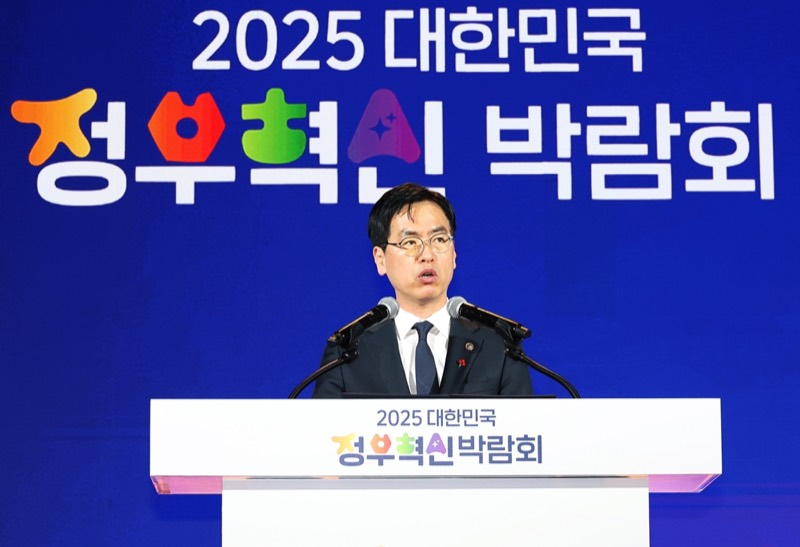
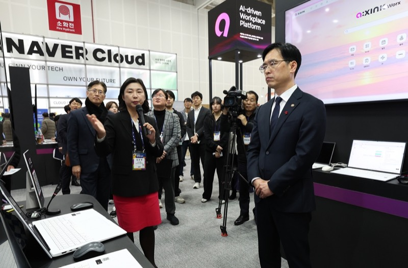
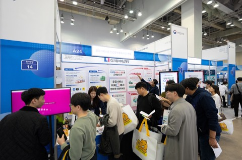

행정안전부가 주최하는 대한민국 대표 정부혁신 행사에서
공공시장의 고객을 직접 만나보세요.


2025 대한민국 정부혁신 박람회(청주 오스코) 현장 · 사진: 행정안전부
중앙부처·지방정부·공공기관의 정책 담당자와 일반 관람객이 한 자리에 모입니다. 2025년에는 삼성SDS·LG CNS·네이버클라우드·한글과컴퓨터·업스테이지 등 68개 기업이 함께했습니다. 공공 서비스를 혁신한 기술이 있다면, 조달·협업의 접점을 이곳에서 만들 수 있습니다.
기업 참여는 운영사무국·유관기관의 공개 모집으로 진행됩니다. 모집 공고는 행정안전부 누리집 공지와 보도자료로 안내됩니다. 2026년 공고는 확정되는 대로 안내 페이지에 게시됩니다.
AI·데이터·클라우드처럼 공공 서비스를 바꾼 기술과 사례를 신청서에 담아 제출합니다. 기술 자체보다 "국민에게 무엇이 달라졌는가"를 보여주는 콘텐츠가 선정에 유리합니다.
선정 기업은 부스를 배정받아 관람객과 만납니다. 체험·시연 프로그램을 함께 준비할 수 있으며, 예년 기준 기본부스(공간+기본집기)와 독립부스(자체 시공) 유형이 운영되었습니다.

참여 안내 페이지에서 역대 개최 기록과 참여 기준을 확인하실 수 있습니다.
2026년 기업 모집 공고도 이 페이지에서 가장 먼저 안내합니다.